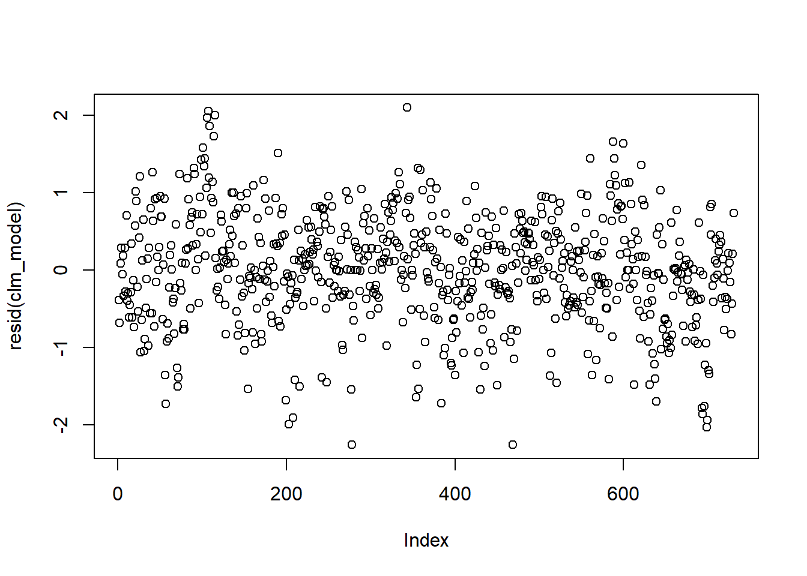

Linking yield with NLR PAV
Philipp Bayer
2020-09-22
Last updated: 2021-03-24
Checks: 7 0
Knit directory: R_gene_analysis/
This reproducible R Markdown analysis was created with workflowr (version 1.6.2.9000). The Checks tab describes the reproducibility checks that were applied when the results were created. The Past versions tab lists the development history.
Great! Since the R Markdown file has been committed to the Git repository, you know the exact version of the code that produced these results.
Great job! The global environment was empty. Objects defined in the global environment can affect the analysis in your R Markdown file in unknown ways. For reproduciblity it’s best to always run the code in an empty environment.
The command set.seed(20200917) was run prior to running the code in the R Markdown file. Setting a seed ensures that any results that rely on randomness, e.g. subsampling or permutations, are reproducible.
Great job! Recording the operating system, R version, and package versions is critical for reproducibility.
Nice! There were no cached chunks for this analysis, so you can be confident that you successfully produced the results during this run.
Great job! Using relative paths to the files within your workflowr project makes it easier to run your code on other machines.
Great! You are using Git for version control. Tracking code development and connecting the code version to the results is critical for reproducibility.
The results in this page were generated with repository version e747dc6. See the Past versions tab to see a history of the changes made to the R Markdown and HTML files.
Note that you need to be careful to ensure that all relevant files for the analysis have been committed to Git prior to generating the results (you can use wflow_publish or wflow_git_commit). workflowr only checks the R Markdown file, but you know if there are other scripts or data files that it depends on. Below is the status of the Git repository when the results were generated:
Ignored files:
Ignored: .Rhistory
Ignored: .Rproj.user/
Untracked files:
Untracked: data/Brec_R1.txt
Untracked: data/Brec_R2.txt
Untracked: data/CR15_R1.txt
Untracked: data/CR15_R2.txt
Untracked: data/CR_14_R1.txt
Untracked: data/CR_14_R2.txt
Untracked: data/KS_R1.txt
Untracked: data/KS_R2.txt
Untracked: data/NBS_PAV.txt.gz
Untracked: data/NLR_PAV_GD.txt
Untracked: data/NLR_PAV_GM.txt
Untracked: data/PAVs_newick.txt
Untracked: data/PPR1.txt
Untracked: data/PPR2.txt
Untracked: data/SNPs_newick.txt
Untracked: data/bac.txt
Untracked: data/brown.txt
Untracked: data/cy3.txt
Untracked: data/cy5.txt
Untracked: data/early.txt
Untracked: data/flowerings.txt
Untracked: data/foregeye.txt
Untracked: data/height.txt
Untracked: data/late.txt
Untracked: data/mature.txt
Untracked: data/motting.txt
Untracked: data/mvp.kin.bin
Untracked: data/mvp.kin.desc
Untracked: data/oil.txt
Untracked: data/pdh.txt
Untracked: data/protein.txt
Untracked: data/rust_tan.txt
Untracked: data/salt.txt
Untracked: data/seedq.txt
Untracked: data/seedweight.txt
Untracked: data/stem_termination.txt
Untracked: data/sudden.txt
Untracked: data/virus.txt
Note that any generated files, e.g. HTML, png, CSS, etc., are not included in this status report because it is ok for generated content to have uncommitted changes.
These are the previous versions of the repository in which changes were made to the R Markdown (analysis/yield_lm_link.Rmd) and HTML (docs/yield_lm_link.html) files. If you’ve configured a remote Git repository (see ?wflow_git_remote), click on the hyperlinks in the table below to view the files as they were in that past version.
| File | Version | Author | Date | Message |
|---|---|---|---|---|
| Rmd | e747dc6 | Philipp Bayer | 2021-03-24 | wflow_publish(files = c(“analysis/index.Rmd”, “analysis/yield_lm_link.Rmd”, |
knitr::opts_chunk$set(message = FALSE)
library(tidyverse)-- Attaching packages ------------------------------------------------------------------------------------------------------------------- tidyverse 1.3.0 --v ggplot2 3.3.2 v purrr 0.3.4
v tibble 3.0.2 v dplyr 1.0.0
v tidyr 1.1.0 v stringr 1.4.0
v readr 1.3.1 v forcats 0.5.0-- Conflicts ---------------------------------------------------------------------------------------------------------------------- tidyverse_conflicts() --
x dplyr::filter() masks stats::filter()
x dplyr::lag() masks stats::lag()library(patchwork)
library(sjPlot)Learn more about sjPlot with 'browseVignettes("sjPlot")'.library(ggsci)
library(dabestr)Loading required package: magrittr
Attaching package: 'magrittr'The following object is masked from 'package:purrr':
set_namesThe following object is masked from 'package:tidyr':
extractlibrary(dabestr)
library(cowplot)
********************************************************Note: As of version 1.0.0, cowplot does not change the default ggplot2 theme anymore. To recover the previous behavior, execute:
theme_set(theme_cowplot())********************************************************
Attaching package: 'cowplot'The following objects are masked from 'package:sjPlot':
plot_grid, save_plotThe following object is masked from 'package:patchwork':
align_plotslibrary(ggsignif)
library(ggforce)
library(lme4)Loading required package: Matrix
Attaching package: 'Matrix'The following objects are masked from 'package:tidyr':
expand, pack, unpacklibrary(directlabels)
library(lmerTest)
Attaching package: 'lmerTest'The following object is masked from 'package:lme4':
lmerThe following object is masked from 'package:stats':
steplibrary(dotwhisker)
library(pals)
theme_set(theme_cowplot())
library(RColorBrewer)
library(countrycode)
library(broom)Data loading
npg_col = pal_npg("nrc")(9)
col_list <- c(`Wild`=npg_col[8],
Landrace = npg_col[3],
`Old cultivar`=npg_col[2],
`Modern cultivar`=npg_col[4])
pav_table <- read_tsv('./data/soybean_pan_pav.matrix_gene.txt.gz')nbs <- read_tsv('./data/Lee.NBS.candidates.lst', col_names = c('Name', 'Class'))
nbs# A tibble: 486 x 2
Name Class
<chr> <chr>
1 UWASoyPan00953.t1 CN
2 GlymaLee.13G222900.1.p CN
3 GlymaLee.18G227000.1.p CN
4 GlymaLee.18G080600.1.p CN
5 GlymaLee.20G036200.1.p CN
6 UWASoyPan01876.t1 CN
7 UWASoyPan04211.t1 CN
8 GlymaLee.19G105400.1.p CN
9 GlymaLee.18G085100.1.p CN
10 GlymaLee.11G142600.1.p CN
# ... with 476 more rows# have to remove the .t1s
nbs$Name <- gsub('.t1','', nbs$Name)
nbs_pav_table <- pav_table %>% filter(Individual %in% nbs$Name)names <- c()
presences <- c()
for (i in seq_along(nbs_pav_table)){
if ( i == 1) next
thisind <- colnames(nbs_pav_table)[i]
pavs <- nbs_pav_table[[i]]
presents <- sum(pavs)
names <- c(names, thisind)
presences <- c(presences, presents)
}
nbs_res_tibb <- new_tibble(list(names = names, presences = presences))Warning: The `nrow` argument of `new_tibble()` can't be missing as of tibble 2.0.0.
`x` must be a scalar integer.
This warning is displayed once every 8 hours.
Call `lifecycle::last_warnings()` to see where this warning was generated.# let's make the same table for all genes too
names <- c()
presences <- c()
for (i in seq_along(pav_table)){
if ( i == 1) next
thisind <- colnames(pav_table)[i]
pavs <- pav_table[[i]]
presents <- sum(pavs)
names <- c(names, thisind)
presences <- c(presences, presents)
}
res_tibb <- new_tibble(list(names = names, presences = presences))groups <- read_csv('./data/Table_of_cultivar_groups.csv')
groups <- groups %>% dplyr::rename(Group = `Group in violin table`)
groups <- groups %>%
mutate(Group = str_replace_all(Group, 'landrace', 'Landrace')) %>%
mutate(Group = str_replace_all(Group, 'Old_cultivar', 'Old cultivar')) %>%
mutate(Group = str_replace_all(Group, 'Modern_cultivar', 'Modern cultivar')) %>%
mutate(Group = str_replace_all(Group, 'Wild-type', 'Wild'))
groups$Group <-
factor(
groups$Group,
levels = c('Wild',
'Landrace',
'Old cultivar',
'Modern cultivar')
)
nbs_joined_groups <-
inner_join(nbs_res_tibb, groups, by = c('names' = 'Data-storage-ID'))
all_joined_groups <-
inner_join(res_tibb, groups, by = c('names' = 'Data-storage-ID'))country <- read_csv('./data/Cultivar_vs_country.csv')
names(country) <- c('names', 'PI-ID', 'Country')
# fix weird ND issue
country <- country %>% mutate(Country = na_if(Country, 'ND'))Linking with yield
Can we link the trajectory of NLR genes with the trajectory of yield across the history of soybean breeding? let’s make a simple regression for now
Yield
yield <- read_tsv('./data/yield.txt')
yield_join <- inner_join(nbs_res_tibb, yield, by=c('names'='Line'))Protein
protein <- read_tsv('./data/protein_phenotype.txt')
protein_join <- left_join(nbs_res_tibb, protein, by=c('names'='Line')) %>% filter(!is.na(Protein))Seed weight
Let’s look at seed weight:
seed_weight <- read_tsv('./data/Seed_weight_Phenotype.txt', col_names = c('names', 'wt'))
seed_join <- left_join(nbs_res_tibb, seed_weight) %>% filter(!is.na(wt))Oil content
And now let’s look at the oil phenotype:
oil <- read_tsv('./data/oil_phenotype.txt')
oil_join <- left_join(nbs_res_tibb, oil, by=c('names'='Line')) %>% filter(!is.na(Oil))
oil_join# A tibble: 962 x 3
names presences Oil
<chr> <dbl> <dbl>
1 AB-01 445 17.6
2 AB-02 454 16.8
3 BR-24 455 20.6
4 ESS 454 20.9
5 For 448 21
6 HN001 448 23.6
7 HN002 444 18.5
8 HN003 446 17.5
9 HN004 442 18.9
10 HN005 440 15.5
# ... with 952 more rowsBasic lm()
These results form the basis of the paper.
Yield
yield_nbs_joined_groups <- nbs_joined_groups %>% inner_join(yield_join, by = 'names')
yield_nbs_joined_groups$Yield2 <-scale(yield_nbs_joined_groups$Yield, center=T, scale=T)
yield_all_joined_groups <- all_joined_groups %>% inner_join(yield_join, by = 'names')yield_country_nbs_joined_groups <- yield_nbs_joined_groups %>% inner_join(country)
yield_country_all_joined_groups <- yield_all_joined_groups %>% inner_join(country)
yield_country_nbs_joined_groups$Count <- yield_country_nbs_joined_groups$presences.y
yield_country_all_joined_groups$Count <- yield_country_all_joined_groups$presences.y
yield_country_all_joined_groups %>% count(Country)# A tibble: 40 x 2
Country n
<chr> <int>
1 Algeria 3
2 Argentina 2
3 Australia 1
4 Austria 1
5 Belgium 2
6 Brazil 1
7 Bulgaria 1
8 Canada 5
9 China 410
10 Costa 1
# ... with 30 more rowslm_model <- lm(Yield ~ Count + Group, data = yield_country_nbs_joined_groups)
summary(lm_model)
Call:
lm(formula = Yield ~ Count + Group, data = yield_country_nbs_joined_groups)
Residuals:
Min 1Q Median 3Q Max
-2.47398 -0.52358 0.02648 0.53660 2.14648
Coefficients:
Estimate Std. Error t value Pr(>|t|)
(Intercept) 10.985573 2.532389 4.338 1.64e-05 ***
Count -0.019960 0.005694 -3.505 0.000483 ***
GroupOld cultivar -0.198279 0.137005 -1.447 0.148255
GroupModern cultivar 1.080136 0.111621 9.677 < 2e-16 ***
---
Signif. codes: 0 '***' 0.001 '**' 0.01 '*' 0.05 '.' 0.1 ' ' 1
Residual standard error: 0.768 on 737 degrees of freedom
Multiple R-squared: 0.1412, Adjusted R-squared: 0.1377
F-statistic: 40.41 on 3 and 737 DF, p-value: < 2.2e-16clm_model <- lm(Yield ~ Count + Group + Country, data = yield_country_nbs_joined_groups)
summary(clm_model)
Call:
lm(formula = Yield ~ Count + Group + Country, data = yield_country_nbs_joined_groups)
Residuals:
Min 1Q Median 3Q Max
-2.25859 -0.39669 0.00554 0.45439 2.09622
Coefficients:
Estimate Std. Error t value Pr(>|t|)
(Intercept) 9.306701 2.552306 3.646 0.000286 ***
Count -0.016068 0.005701 -2.818 0.004965 **
GroupOld cultivar -0.217698 0.139274 -1.563 0.118490
GroupModern cultivar 0.801209 0.214539 3.735 0.000204 ***
CountryArgentina -0.599057 0.693473 -0.864 0.387970
CountryAustralia -0.684304 0.834828 -0.820 0.412674
CountryAustria 0.415356 0.834277 0.498 0.618739
CountryBelgium -0.290712 0.659563 -0.441 0.659522
CountryBrazil -0.734304 0.834828 -0.880 0.379390
CountryBulgaria -0.418916 0.834536 -0.502 0.615846
CountryCanada -0.151286 0.557169 -0.272 0.786068
CountryChina -0.028384 0.418992 -0.068 0.946009
CountryCosta 0.781084 0.834536 0.936 0.349627
CountryFormer Serbia 1.044147 0.861446 1.212 0.225895
CountryFrance 0.309458 0.551920 0.561 0.575188
CountryGeorgia 0.814118 0.659799 1.234 0.217665
CountryGermany -0.241499 0.556404 -0.434 0.664398
CountryHungary 0.613026 0.552057 1.110 0.267197
CountryIndia -1.154389 0.552312 -2.090 0.036974 *
CountryIndonesia -1.244474 0.552057 -2.254 0.024494 *
CountryItaly 0.479122 0.845855 0.566 0.571282
CountryJapan -0.335560 0.427004 -0.786 0.432227
CountryKorea -0.230379 0.426146 -0.541 0.588951
CountryKyrgyzstan 0.705356 0.834277 0.845 0.398142
CountryMoldova 0.021216 0.498774 0.043 0.966083
CountryMorocco 0.830308 0.838267 0.991 0.322275
CountryMyanmar -1.112120 0.660646 -1.683 0.092754 .
CountryNepal -0.445542 0.659635 -0.675 0.499624
CountryNetherlands -0.710712 0.834283 -0.852 0.394575
CountryPakistan -2.183188 0.835419 -2.613 0.009163 **
CountryPeru -1.182508 0.834381 -1.417 0.156868
CountryPoland 0.955696 0.834828 1.145 0.252697
CountryRomania 1.153091 0.510943 2.257 0.024334 *
CountryRussia 0.539649 0.432796 1.247 0.212862
CountrySerbia 0.221424 0.659596 0.336 0.737202
CountrySouth Africa -0.600125 0.861382 -0.697 0.486225
CountrySweden -0.766382 0.592628 -1.293 0.196378
CountryTaiwan -0.656968 0.528544 -1.243 0.214299
CountryUkraine 0.723560 0.834491 0.867 0.386207
CountryUSA 0.345864 0.463385 0.746 0.455689
CountryUzbekistan 0.315016 0.834699 0.377 0.705992
CountryVietnam -0.693042 0.551920 -1.256 0.209653
---
Signif. codes: 0 '***' 0.001 '**' 0.01 '*' 0.05 '.' 0.1 ' ' 1
Residual standard error: 0.7225 on 689 degrees of freedom
(10 observations deleted due to missingness)
Multiple R-squared: 0.2829, Adjusted R-squared: 0.2403
F-statistic: 6.631 on 41 and 689 DF, p-value: < 2.2e-16yieldmod <- clm_modelinterlm_model <- lm(Yield ~ Count * Group, data = yield_country_nbs_joined_groups)
summary(interlm_model)
Call:
lm(formula = Yield ~ Count * Group, data = yield_country_nbs_joined_groups)
Residuals:
Min 1Q Median 3Q Max
-2.38311 -0.51569 0.01947 0.53258 2.13947
Coefficients:
Estimate Std. Error t value Pr(>|t|)
(Intercept) 9.62255 2.70414 3.558 0.000397 ***
Count -0.01690 0.00608 -2.779 0.005598 **
GroupOld cultivar 18.63259 11.02113 1.691 0.091333 .
GroupModern cultivar 5.56130 10.01054 0.556 0.578692
Count:GroupOld cultivar -0.04234 0.02478 -1.709 0.087920 .
Count:GroupModern cultivar -0.01012 0.02263 -0.447 0.654959
---
Signif. codes: 0 '***' 0.001 '**' 0.01 '*' 0.05 '.' 0.1 ' ' 1
Residual standard error: 0.7674 on 735 degrees of freedom
Multiple R-squared: 0.1448, Adjusted R-squared: 0.139
F-statistic: 24.88 on 5 and 735 DF, p-value: < 2.2e-16tab_model(clm_model, p.val='kr', digits=3)| Yield | |||
|---|---|---|---|
| Predictors | Estimates | CI | p |
| (Intercept) | 9.307 | 4.295 – 14.318 | <0.001 |
| Count | -0.016 | -0.027 – -0.005 | 0.005 |
| Group [Old cultivar] | -0.218 | -0.491 – 0.056 | 0.118 |
| Group [Modern cultivar] | 0.801 | 0.380 – 1.222 | <0.001 |
| Country [Argentina] | -0.599 | -1.961 – 0.763 | 0.388 |
| Country [Australia] | -0.684 | -2.323 – 0.955 | 0.413 |
| Country [Austria] | 0.415 | -1.223 – 2.053 | 0.619 |
| Country [Belgium] | -0.291 | -1.586 – 1.004 | 0.660 |
| Country [Brazil] | -0.734 | -2.373 – 0.905 | 0.379 |
| Country [Bulgaria] | -0.419 | -2.057 – 1.220 | 0.616 |
| Country [Canada] | -0.151 | -1.245 – 0.943 | 0.786 |
| Country [China] | -0.028 | -0.851 – 0.794 | 0.946 |
| Country [Costa] | 0.781 | -0.857 – 2.420 | 0.350 |
| Country [Former Serbia] | 1.044 | -0.647 – 2.736 | 0.226 |
| Country [France] | 0.309 | -0.774 – 1.393 | 0.575 |
| Country [Georgia] | 0.814 | -0.481 – 2.110 | 0.218 |
| Country [Germany] | -0.241 | -1.334 – 0.851 | 0.664 |
| Country [Hungary] | 0.613 | -0.471 – 1.697 | 0.267 |
| Country [India] | -1.154 | -2.239 – -0.070 | 0.037 |
| Country [Indonesia] | -1.244 | -2.328 – -0.161 | 0.024 |
| Country [Italy] | 0.479 | -1.182 – 2.140 | 0.571 |
| Country [Japan] | -0.336 | -1.174 – 0.503 | 0.432 |
| Country [Korea] | -0.230 | -1.067 – 0.606 | 0.589 |
| Country [Kyrgyzstan] | 0.705 | -0.933 – 2.343 | 0.398 |
| Country [Moldova] | 0.021 | -0.958 – 1.001 | 0.966 |
| Country [Morocco] | 0.830 | -0.816 – 2.476 | 0.322 |
| Country [Myanmar] | -1.112 | -2.409 – 0.185 | 0.093 |
| Country [Nepal] | -0.446 | -1.741 – 0.850 | 0.500 |
| Country [Netherlands] | -0.711 | -2.349 – 0.927 | 0.395 |
| Country [Pakistan] | -2.183 | -3.823 – -0.543 | 0.009 |
| Country [Peru] | -1.183 | -2.821 – 0.456 | 0.157 |
| Country [Poland] | 0.956 | -0.683 – 2.595 | 0.253 |
| Country [Romania] | 1.153 | 0.150 – 2.156 | 0.024 |
| Country [Russia] | 0.540 | -0.310 – 1.389 | 0.213 |
| Country [Serbia] | 0.221 | -1.074 – 1.516 | 0.737 |
| Country [South Africa] | -0.600 | -2.291 – 1.091 | 0.486 |
| Country [Sweden] | -0.766 | -1.930 – 0.397 | 0.196 |
| Country [Taiwan] | -0.657 | -1.695 – 0.381 | 0.214 |
| Country [Ukraine] | 0.724 | -0.915 – 2.362 | 0.386 |
| Country [USA] | 0.346 | -0.564 – 1.256 | 0.456 |
| Country [Uzbekistan] | 0.315 | -1.324 – 1.954 | 0.706 |
| Country [Vietnam] | -0.693 | -1.777 – 0.391 | 0.210 |
| Observations | 731 | ||
| R2 / R2 adjusted | 0.283 / 0.240 | ||
newdat <-cbind(yield_country_all_joined_groups %>% filter(!is.na(Country)), pred = predict(clm_model))# I want only every second, stronger color of the Paired scheme
mycol <- brewer.pal(n = 12, name = "Paired")[seq(2, 12, 2)]newdat %>% mutate(
Country2 = case_when (
Country == 'USA' ~ 'USA',
Country == 'China' ~ 'China',
Country == 'Korea' ~ 'Korea',
Country == 'Japan' ~ 'Japan',
Country == 'Russia' ~ 'Russia',
TRUE ~ 'Rest'
)
) %>%
mutate(Country2 = factor(
Country2,
levels = c('China', 'Japan', 'Korea', 'Russia', 'USA', 'Rest')
)) %>%
ggplot(aes(x = Count, y = pred, color = Country2)) +
facet_wrap( ~ Group, nrow = 1) +
geom_point(aes(y = Yield, color = Country2),
alpha = 0.8,
size = 2) +
geom_line(aes(y=pred, group=interaction(Group, Country),colour=Country2), size=1.5)+
theme_minimal_hgrid() +
xlab('Gene count') +
ylab(expression(paste('Yield [Mg ', ha ^ -1, ']'))) +
scale_color_manual(values = mycol) +
#xlim(c(47.900, 49.700)) +
labs(color = "Country") +
theme(panel.spacing = unit(0.9, "lines"),
axis.text.x = element_text(size = 10))Oh wow, that looks very similar.
plot_model(clm_model, type = "pred", terms = c("Count", "Group")) +
theme_minimal_hgrid() +
#scale_fill_manual(values = col_list) +
#scale_color_manual(values = col_list) +
xlab('NLR count') +
ylab((expression(paste('Yield [Mg ', ha^-1, ']')))) +
theme(plot.title=element_blank())
qqnorm(resid(clm_model))
qqline(resid(clm_model))
plot(resid(clm_model))plot_model(clm_model, show.values = TRUE, value.offset = .3, terms=c('GroupOld cultivar', 'Count', 'GroupModern cultivar'))plot_model(clm_model, type = "std", show.values = TRUE, value.offset = .3,)plot_model(clm_model, type = "std", show.values = TRUE, value.offset = .3,, terms=c('GroupOld cultivar', 'Count', 'GroupModern cultivar'))
Protein
protein_nbs_joined_groups <- nbs_joined_groups %>% inner_join(protein_join, by = 'names')
#protein_nbs_joined_groups$Protein2 <- scale(protein_nbs_joined_groups$Protein, center=T, scale=T)
protein_country_nbs_joined_groups <- protein_nbs_joined_groups %>% inner_join(country)
#protein_country_nbs_joined_groups <- rename(protein_country_nbs_joined_groups, Group=`Group in violin table`)
protein_country_nbs_joined_groups <- protein_country_nbs_joined_groups %>% filter(Group != 'Wild')
protein_country_nbs_joined_groups <- protein_country_nbs_joined_groups %>% rename(Count = presences.x)lm_model <- lm(Protein ~ Count + Group, data = protein_country_nbs_joined_groups)
summary(lm_model)
Call:
lm(formula = Protein ~ Count + Group, data = protein_country_nbs_joined_groups)
Residuals:
Min 1Q Median 3Q Max
-7.4693 -1.9952 -0.1035 1.6965 9.5650
Coefficients:
Estimate Std. Error t value Pr(>|t|)
(Intercept) 29.16057 8.99723 3.241 0.001241 **
Count 0.03425 0.02023 1.693 0.090781 .
GroupOld cultivar -1.53490 0.45402 -3.381 0.000759 ***
GroupModern cultivar -1.42768 0.35601 -4.010 6.64e-05 ***
---
Signif. codes: 0 '***' 0.001 '**' 0.01 '*' 0.05 '.' 0.1 ' ' 1
Residual standard error: 2.823 on 785 degrees of freedom
Multiple R-squared: 0.03787, Adjusted R-squared: 0.0342
F-statistic: 10.3 on 3 and 785 DF, p-value: 1.178e-06clm_model <- lm(Protein ~ Count + Group + Country, data = protein_country_nbs_joined_groups)
summary(clm_model)
Call:
lm(formula = Protein ~ Count + Group + Country, data = protein_country_nbs_joined_groups)
Residuals:
Min 1Q Median 3Q Max
-7.5543 -1.8497 -0.1008 1.6682 9.9914
Coefficients:
Estimate Std. Error t value Pr(>|t|)
(Intercept) 37.14499 9.50557 3.908 0.000102 ***
Count 0.01416 0.02121 0.668 0.504547
GroupOld cultivar -1.59216 0.47823 -3.329 0.000914 ***
GroupModern cultivar -0.83999 0.76763 -1.094 0.274196
CountryArgentina 0.17776 2.65850 0.067 0.946708
CountryAustralia 0.88155 2.54745 0.346 0.729403
CountryAustria -1.70472 3.21970 -0.529 0.596642
CountryBelgium 0.50944 2.54543 0.200 0.841426
CountryBrazil 0.36257 2.13865 0.170 0.865423
CountryBulgaria -0.94807 3.22063 -0.294 0.768554
CountryCanada -0.53675 2.00875 -0.267 0.789386
CountryChina 1.02128 1.61681 0.632 0.527801
CountryCosta -2.54807 3.22063 -0.791 0.429098
CountryFormer Serbia 0.83527 3.31001 0.252 0.800843
CountryFrance -0.95096 2.12998 -0.446 0.655392
CountryGeorgia 0.79485 2.54627 0.312 0.755007
CountryGermany -0.31615 2.14375 -0.147 0.882795
CountryHungary -0.51513 2.13047 -0.242 0.809010
CountryIndia 1.49958 1.89230 0.792 0.428346
CountryIndonesia 3.23487 2.13047 1.518 0.129347
CountryItaly 0.47328 3.25514 0.145 0.884440
CountryJapan 0.31111 1.64568 0.189 0.850108
CountryKorea 2.11269 1.64371 1.285 0.199087
CountryKyrgyzstan -2.50472 3.21970 -0.778 0.436856
CountryMoldova -1.24935 1.92485 -0.649 0.516498
CountryMorocco 2.79701 3.23401 0.865 0.387390
CountryMyanmar 5.79442 2.54931 2.273 0.023318 *
CountryNepal 0.52404 2.54568 0.206 0.836963
CountryNetherlands -1.79056 3.21972 -0.556 0.578296
CountryPakistan -1.99142 3.22379 -0.618 0.536947
CountryPeru 2.06695 3.22007 0.642 0.521139
CountryPoland 0.12447 3.22167 0.039 0.969192
CountryRomania -1.91888 1.97185 -0.973 0.330804
CountryRussia 1.14427 1.67007 0.685 0.493458
CountrySerbia -1.11888 2.54554 -0.440 0.660395
CountrySouth Africa -1.90808 3.31005 -0.576 0.564487
CountrySweden -0.68287 2.28541 -0.299 0.765181
CountryTaiwan 2.00539 2.03916 0.983 0.325715
CountryTanzania -2.96137 3.22100 -0.919 0.358190
CountryUkraine -2.44721 3.22046 -0.760 0.447562
CountryUSA 0.37499 1.76882 0.212 0.832164
CountryUzbekistan -2.43391 3.22121 -0.756 0.450137
CountryVietnam 2.17404 2.12998 1.021 0.307739
---
Signif. codes: 0 '***' 0.001 '**' 0.01 '*' 0.05 '.' 0.1 ' ' 1
Residual standard error: 2.788 on 736 degrees of freedom
(10 observations deleted due to missingness)
Multiple R-squared: 0.112, Adjusted R-squared: 0.06128
F-statistic: 2.209 on 42 and 736 DF, p-value: 2.577e-05protmod <- clm_modelSeed weight
seed_nbs_joined_groups <- nbs_joined_groups %>% inner_join(seed_join, by = 'names')
#seed_nbs_joined_groups$wt2 <- scale(seed_nbs_joined_groups$wt, center=T, scale=T)
seed_country_nbs_joined_groups <- seed_nbs_joined_groups %>% inner_join(country)
#seed_country_nbs_joined_groups <- rename(seed_country_nbs_joined_groups, Group = `Group in violin table`)
seed_country_nbs_joined_groups <- seed_country_nbs_joined_groups %>% filter(Group != 'Wild')
seed_country_nbs_joined_groups <- seed_country_nbs_joined_groups %>% rename(Count = presences.x)lm_model <- lm(wt ~ Count + Group, data = seed_country_nbs_joined_groups)
summary(lm_model)
Call:
lm(formula = wt ~ Count + Group, data = seed_country_nbs_joined_groups)
Residuals:
Min 1Q Median 3Q Max
-11.0968 -2.7970 0.0037 2.5611 19.6026
Coefficients:
Estimate Std. Error t value Pr(>|t|)
(Intercept) 1.314e+01 1.512e+01 0.869 0.38510
Count 1.307e-04 3.399e-02 0.004 0.99693
GroupOld cultivar 1.612e+00 7.732e-01 2.085 0.03745 *
GroupModern cultivar 1.643e+00 6.035e-01 2.723 0.00665 **
---
Signif. codes: 0 '***' 0.001 '**' 0.01 '*' 0.05 '.' 0.1 ' ' 1
Residual standard error: 4.188 on 629 degrees of freedom
Multiple R-squared: 0.01745, Adjusted R-squared: 0.01276
F-statistic: 3.724 on 3 and 629 DF, p-value: 0.01129clm_model <- lm(wt ~ Count + Group + Country, data = seed_country_nbs_joined_groups)
summary(clm_model)
Call:
lm(formula = wt ~ Count + Group + Country, data = seed_country_nbs_joined_groups)
Residuals:
Min 1Q Median 3Q Max
-12.222 -2.473 0.000 2.297 19.312
Coefficients:
Estimate Std. Error t value Pr(>|t|)
(Intercept) 20.41722 15.96470 1.279 0.201439
Count -0.02562 0.03574 -0.717 0.473706
GroupOld cultivar 1.01558 0.84334 1.204 0.228982
GroupModern cultivar 1.78999 1.32483 1.351 0.177182
CountryArgentina 1.16481 4.94786 0.235 0.813967
CountryAustralia 5.32385 3.77255 1.411 0.158714
CountryBelgium 4.03167 4.76789 0.846 0.398127
CountryBrazil 4.05979 3.37177 1.204 0.229054
CountryBulgaria 4.40605 4.76874 0.924 0.355895
CountryCanada 4.83881 3.21326 1.506 0.132634
CountryChina 3.97326 2.39648 1.658 0.097861 .
CountryCosta 4.60605 4.76874 0.966 0.334500
CountryFormer Serbia 5.61855 4.94786 1.136 0.256607
CountryFrance 13.55072 3.77898 3.586 0.000364 ***
CountryGeorgia 7.51886 3.77029 1.994 0.046588 *
CountryGermany 8.35203 3.86586 2.160 0.031141 *
CountryHungary 6.85125 3.37149 2.032 0.042592 *
CountryIndia -0.33772 3.02336 -0.112 0.911098
CountryIndonesia -0.11542 3.37149 -0.034 0.972702
CountryItaly 1.81858 4.84127 0.376 0.707319
CountryJapan 5.17895 2.44293 2.120 0.034427 *
CountryKorea 4.44772 2.44494 1.819 0.069397 .
CountryKyrgyzstan 4.80854 4.76695 1.009 0.313522
CountryMoldova 2.58441 3.01551 0.857 0.391773
CountryMorocco 7.26728 4.79439 1.516 0.130111
CountryMyanmar -1.57083 3.77612 -0.416 0.677570
CountryNepal 3.14698 3.76916 0.835 0.404099
CountryPakistan -4.99645 4.77481 -1.046 0.295798
CountryPeru 7.45979 4.76767 1.565 0.118201
CountryRomania 3.53479 3.15414 1.121 0.262881
CountryRussia 4.72218 2.48399 1.901 0.057785 .
CountrySerbia 2.13417 3.76890 0.566 0.571435
CountrySouth Africa 2.71606 4.94682 0.549 0.583179
CountrySweden 8.10668 3.38864 2.392 0.017056 *
CountryTaiwan 3.89395 3.37328 1.154 0.248826
CountryTanzania 5.01104 4.76945 1.051 0.293851
CountryUkraine 9.08541 4.76843 1.905 0.057226 .
CountryUSA 3.91751 2.69217 1.455 0.146162
CountryUzbekistan 5.28042 4.76985 1.107 0.268730
CountryVietnam -0.22802 3.15371 -0.072 0.942385
---
Signif. codes: 0 '***' 0.001 '**' 0.01 '*' 0.05 '.' 0.1 ' ' 1
Residual standard error: 4.128 on 587 degrees of freedom
(6 observations deleted due to missingness)
Multiple R-squared: 0.09879, Adjusted R-squared: 0.03892
F-statistic: 1.65 on 39 and 587 DF, p-value: 0.008891seedmod <- clm_modelNothing at all.
Oil content
oil_nbs_joined_groups <- nbs_joined_groups %>% inner_join(oil_join, by = 'names')
oil_nbs_joined_groups$Oil2 <- scale(oil_nbs_joined_groups$Oil, center=T, scale=T)
oil_country_nbs_joined_groups <- oil_nbs_joined_groups %>% inner_join(country)
oil_country_nbs_joined_groups <- oil_country_nbs_joined_groups %>% filter(Group != 'Wild')
oil_country_nbs_joined_groups <- oil_country_nbs_joined_groups %>% rename(Count = presences.x)lm_model <- lm(Oil ~ Count + Group, data = oil_country_nbs_joined_groups)
summary(lm_model)
Call:
lm(formula = Oil ~ Count + Group, data = oil_country_nbs_joined_groups)
Residuals:
Min 1Q Median 3Q Max
-10.0707 -1.2772 0.2899 1.5654 7.0260
Coefficients:
Estimate Std. Error t value Pr(>|t|)
(Intercept) 35.58518 7.29827 4.876 1.31e-06 ***
Count -0.03935 0.01641 -2.398 0.01671 *
GroupOld cultivar 1.17018 0.36829 3.177 0.00154 **
GroupModern cultivar 1.77380 0.28878 6.142 1.29e-09 ***
---
Signif. codes: 0 '***' 0.001 '**' 0.01 '*' 0.05 '.' 0.1 ' ' 1
Residual standard error: 2.29 on 785 degrees of freedom
Multiple R-squared: 0.06684, Adjusted R-squared: 0.06328
F-statistic: 18.74 on 3 and 785 DF, p-value: 9.485e-12Interesting, the simple model has p< 0.05 for oil content!
clm_model <- lm(Oil ~ Count + Group + Country, data = oil_country_nbs_joined_groups)
summary(clm_model)
Call:
lm(formula = Oil ~ Count + Group + Country, data = oil_country_nbs_joined_groups)
Residuals:
Min 1Q Median 3Q Max
-9.8810 -1.2328 0.1494 1.4493 6.9085
Coefficients:
Estimate Std. Error t value Pr(>|t|)
(Intercept) 29.54369 7.66209 3.856 0.000125 ***
Count -0.02893 0.01710 -1.692 0.091068 .
GroupOld cultivar 1.04686 0.38549 2.716 0.006769 **
GroupModern cultivar 1.27422 0.61876 2.059 0.039816 *
CountryArgentina 2.43197 2.14292 1.135 0.256792
CountryAustralia 2.17316 2.05341 1.058 0.290257
CountryAustria 2.64298 2.59528 1.018 0.308832
CountryBelgium 1.31405 2.05177 0.640 0.522083
CountryBrazil 2.11058 1.72389 1.224 0.221224
CountryBulgaria 1.62726 2.59603 0.627 0.530967
CountryCanada 2.82941 1.61918 1.747 0.080979 .
CountryChina 1.52124 1.30325 1.167 0.243480
CountryCosta 3.52726 2.59603 1.359 0.174654
CountryFormer Serbia 3.06876 2.66808 1.150 0.250445
CountryFrance 2.91137 1.71690 1.696 0.090363 .
CountryGeorgia 0.94172 2.05246 0.459 0.646493
CountryGermany 2.73276 1.72799 1.581 0.114202
CountryHungary 3.59030 1.71729 2.091 0.036900 *
CountryIndia -1.39957 1.52531 -0.918 0.359149
CountryIndonesia -0.48470 1.71729 -0.282 0.777834
CountryItaly 2.92505 2.62385 1.115 0.265303
CountryJapan 1.26616 1.32653 0.954 0.340149
CountryKorea 0.69858 1.32494 0.527 0.598176
CountryKyrgyzstan 2.74298 2.59528 1.057 0.290899
CountryMoldova 2.23354 1.55155 1.440 0.150419
CountryMorocco 2.54798 2.60682 0.977 0.328677
CountryMyanmar -1.90953 2.05491 -0.929 0.353063
CountryNepal 1.33637 2.05198 0.651 0.515083
CountryNetherlands 1.81405 2.59530 0.699 0.484788
CountryPakistan -4.38846 2.59858 -1.689 0.091683 .
CountryPeru -0.89917 2.59558 -0.346 0.729125
CountryPoland 3.68762 2.59687 1.420 0.156024
CountryRomania 2.70524 1.58944 1.702 0.089175 .
CountryRussia 1.59189 1.34619 1.183 0.237382
CountrySerbia 2.17191 2.05187 1.059 0.290174
CountrySouth Africa 3.75304 2.66811 1.407 0.159959
CountrySweden 2.41498 1.84218 1.311 0.190289
CountryTaiwan 0.65146 1.64369 0.396 0.691968
CountryTanzania 5.85869 2.59633 2.257 0.024330 *
CountryUkraine 3.32976 2.59590 1.283 0.200000
CountryUSA 1.79837 1.42578 1.261 0.207592
CountryUzbekistan 2.29833 2.59650 0.885 0.376356
CountryVietnam -1.51363 1.71690 -0.882 0.378277
---
Signif. codes: 0 '***' 0.001 '**' 0.01 '*' 0.05 '.' 0.1 ' ' 1
Residual standard error: 2.248 on 736 degrees of freedom
(10 observations deleted due to missingness)
Multiple R-squared: 0.148, Adjusted R-squared: 0.09939
F-statistic: 3.044 on 42 and 736 DF, p-value: 1.373e-09oilmod <- clm_modelp = 0.07 for Count + Group + Country in the model
All models together
tab_model(yieldmod, oilmod, protmod, seedmod, digits=3 )| Yield | Oil | Protein | wt | |||||||||
|---|---|---|---|---|---|---|---|---|---|---|---|---|
| Predictors | Estimates | CI | p | Estimates | CI | p | Estimates | CI | p | Estimates | CI | p |
| (Intercept) | 9.307 | 4.295 – 14.318 | <0.001 | 29.544 | 14.502 – 44.586 | <0.001 | 37.145 | 18.484 – 55.806 | <0.001 | 20.417 | -10.938 – 51.772 | 0.201 |
| Count | -0.016 | -0.027 – -0.005 | 0.005 | -0.029 | -0.062 – 0.005 | 0.091 | 0.014 | -0.027 – 0.056 | 0.505 | -0.026 | -0.096 – 0.045 | 0.474 |
| Group [Old cultivar] | -0.218 | -0.491 – 0.056 | 0.118 | 1.047 | 0.290 – 1.804 | 0.007 | -1.592 | -2.531 – -0.653 | 0.001 | 1.016 | -0.641 – 2.672 | 0.229 |
| Group [Modern cultivar] | 0.801 | 0.380 – 1.222 | <0.001 | 1.274 | 0.059 – 2.489 | 0.040 | -0.840 | -2.347 – 0.667 | 0.274 | 1.790 | -0.812 – 4.392 | 0.177 |
| Country [Argentina] | -0.599 | -1.961 – 0.763 | 0.388 | 2.432 | -1.775 – 6.639 | 0.257 | 0.178 | -5.041 – 5.397 | 0.947 | 1.165 | -8.553 – 10.882 | 0.814 |
| Country [Australia] | -0.684 | -2.323 – 0.955 | 0.413 | 2.173 | -1.858 – 6.204 | 0.290 | 0.882 | -4.120 – 5.883 | 0.729 | 5.324 | -2.085 – 12.733 | 0.159 |
| Country [Austria] | 0.415 | -1.223 – 2.053 | 0.619 | 2.643 | -2.452 – 7.738 | 0.309 | -1.705 | -8.026 – 4.616 | 0.597 | |||
| Country [Belgium] | -0.291 | -1.586 – 1.004 | 0.660 | 1.314 | -2.714 – 5.342 | 0.522 | 0.509 | -4.488 – 5.507 | 0.841 | 4.032 | -5.333 – 13.396 | 0.398 |
| Country [Brazil] | -0.734 | -2.373 – 0.905 | 0.379 | 2.111 | -1.274 – 5.495 | 0.221 | 0.363 | -3.836 – 4.561 | 0.865 | 4.060 | -2.562 – 10.682 | 0.229 |
| Country [Bulgaria] | -0.419 | -2.057 – 1.220 | 0.616 | 1.627 | -3.469 – 6.724 | 0.531 | -0.948 | -7.271 – 5.375 | 0.769 | 4.406 | -4.960 – 13.772 | 0.356 |
| Country [Canada] | -0.151 | -1.245 – 0.943 | 0.786 | 2.829 | -0.349 – 6.008 | 0.081 | -0.537 | -4.480 – 3.407 | 0.789 | 4.839 | -1.472 – 11.150 | 0.133 |
| Country [China] | -0.028 | -0.851 – 0.794 | 0.946 | 1.521 | -1.037 – 4.080 | 0.243 | 1.021 | -2.153 – 4.195 | 0.528 | 3.973 | -0.733 – 8.680 | 0.098 |
| Country [Costa] | 0.781 | -0.857 – 2.420 | 0.350 | 3.527 | -1.569 – 8.624 | 0.175 | -2.548 | -8.871 – 3.775 | 0.429 | 4.606 | -4.760 – 13.972 | 0.335 |
| Country [Former Serbia] | 1.044 | -0.647 – 2.736 | 0.226 | 3.069 | -2.169 – 8.307 | 0.250 | 0.835 | -5.663 – 7.333 | 0.801 | 5.619 | -4.099 – 15.336 | 0.257 |
| Country [France] | 0.309 | -0.774 – 1.393 | 0.575 | 2.911 | -0.459 – 6.282 | 0.090 | -0.951 | -5.133 – 3.231 | 0.655 | 13.551 | 6.129 – 20.973 | <0.001 |
| Country [Georgia] | 0.814 | -0.481 – 2.110 | 0.218 | 0.942 | -3.088 – 4.971 | 0.646 | 0.795 | -4.204 – 5.794 | 0.755 | 7.519 | 0.114 – 14.924 | 0.047 |
| Country [Germany] | -0.241 | -1.334 – 0.851 | 0.664 | 2.733 | -0.660 – 6.125 | 0.114 | -0.316 | -4.525 – 3.892 | 0.883 | 8.352 | 0.759 – 15.945 | 0.031 |
| Country [Hungary] | 0.613 | -0.471 – 1.697 | 0.267 | 3.590 | 0.219 – 6.962 | 0.037 | -0.515 | -4.698 – 3.667 | 0.809 | 6.851 | 0.230 – 13.473 | 0.043 |
| Country [India] | -1.154 | -2.239 – -0.070 | 0.037 | -1.400 | -4.394 – 1.595 | 0.359 | 1.500 | -2.215 – 5.215 | 0.428 | -0.338 | -6.276 – 5.600 | 0.911 |
| Country [Indonesia] | -1.244 | -2.328 – -0.161 | 0.024 | -0.485 | -3.856 – 2.887 | 0.778 | 3.235 | -0.948 – 7.417 | 0.129 | -0.115 | -6.737 – 6.506 | 0.973 |
| Country [Italy] | 0.479 | -1.182 – 2.140 | 0.571 | 2.925 | -2.226 – 8.076 | 0.265 | 0.473 | -5.917 – 6.864 | 0.884 | 1.819 | -7.690 – 11.327 | 0.707 |
| Country [Japan] | -0.336 | -1.174 – 0.503 | 0.432 | 1.266 | -1.338 – 3.870 | 0.340 | 0.311 | -2.920 – 3.542 | 0.850 | 5.179 | 0.381 – 9.977 | 0.034 |
| Country [Korea] | -0.230 | -1.067 – 0.606 | 0.589 | 0.699 | -1.903 – 3.300 | 0.598 | 2.113 | -1.114 – 5.340 | 0.199 | 4.448 | -0.354 – 9.250 | 0.069 |
| Country [Kyrgyzstan] | 0.705 | -0.933 – 2.343 | 0.398 | 2.743 | -2.352 – 7.838 | 0.291 | -2.505 | -8.826 – 3.816 | 0.437 | 4.809 | -4.554 – 14.171 | 0.314 |
| Country [Moldova] | 0.021 | -0.958 – 1.001 | 0.966 | 2.234 | -0.812 – 5.280 | 0.150 | -1.249 | -5.028 – 2.529 | 0.516 | 2.584 | -3.338 – 8.507 | 0.392 |
| Country [Morocco] | 0.830 | -0.816 – 2.476 | 0.322 | 2.548 | -2.570 – 7.666 | 0.329 | 2.797 | -3.552 – 9.146 | 0.387 | 7.267 | -2.149 – 16.684 | 0.130 |
| Country [Myanmar] | -1.112 | -2.409 – 0.185 | 0.093 | -1.910 | -5.944 – 2.125 | 0.353 | 5.794 | 0.790 – 10.799 | 0.023 | -1.571 | -8.987 – 5.846 | 0.678 |
| Country [Nepal] | -0.446 | -1.741 – 0.850 | 0.500 | 1.336 | -2.692 – 5.365 | 0.515 | 0.524 | -4.474 – 5.522 | 0.837 | 3.147 | -4.256 – 10.550 | 0.404 |
| Country [Netherlands] | -0.711 | -2.349 – 0.927 | 0.395 | 1.814 | -3.281 – 6.909 | 0.485 | -1.791 | -8.111 – 4.530 | 0.578 | |||
| Country [Pakistan] | -2.183 | -3.823 – -0.543 | 0.009 | -4.388 | -9.490 – 0.713 | 0.092 | -1.991 | -8.320 – 4.338 | 0.537 | -4.996 | -14.374 – 4.381 | 0.296 |
| Country [Peru] | -1.183 | -2.821 – 0.456 | 0.157 | -0.899 | -5.995 – 4.196 | 0.729 | 2.067 | -4.255 – 8.389 | 0.521 | 7.460 | -1.904 – 16.824 | 0.118 |
| Country [Poland] | 0.956 | -0.683 – 2.595 | 0.253 | 3.688 | -1.411 – 8.786 | 0.156 | 0.124 | -6.200 – 6.449 | 0.969 | |||
| Country [Romania] | 1.153 | 0.150 – 2.156 | 0.024 | 2.705 | -0.415 – 5.826 | 0.089 | -1.919 | -5.790 – 1.952 | 0.331 | 3.535 | -2.660 – 9.730 | 0.263 |
| Country [Russia] | 0.540 | -0.310 – 1.389 | 0.213 | 1.592 | -1.051 – 4.235 | 0.237 | 1.144 | -2.134 – 4.423 | 0.493 | 4.722 | -0.156 – 9.601 | 0.058 |
| Country [Serbia] | 0.221 | -1.074 – 1.516 | 0.737 | 2.172 | -1.856 – 6.200 | 0.290 | -1.119 | -6.116 – 3.879 | 0.660 | 2.134 | -5.268 – 9.536 | 0.571 |
| Country [South Africa] | -0.600 | -2.291 – 1.091 | 0.486 | 3.753 | -1.485 – 8.991 | 0.160 | -1.908 | -8.406 – 4.590 | 0.564 | 2.716 | -7.000 – 12.432 | 0.583 |
| Country [Sweden] | -0.766 | -1.930 – 0.397 | 0.196 | 2.415 | -1.202 – 6.032 | 0.190 | -0.683 | -5.170 – 3.804 | 0.765 | 8.107 | 1.451 – 14.762 | 0.017 |
| Country [Taiwan] | -0.657 | -1.695 – 0.381 | 0.214 | 0.651 | -2.575 – 3.878 | 0.692 | 2.005 | -1.998 – 6.009 | 0.326 | 3.894 | -2.731 – 10.519 | 0.249 |
| Country [Ukraine] | 0.724 | -0.915 – 2.362 | 0.386 | 3.330 | -1.766 – 8.426 | 0.200 | -2.447 | -8.770 – 3.875 | 0.448 | 9.085 | -0.280 – 18.451 | 0.057 |
| Country [USA] | 0.346 | -0.564 – 1.256 | 0.456 | 1.798 | -1.001 – 4.597 | 0.208 | 0.375 | -3.098 – 3.848 | 0.832 | 3.918 | -1.370 – 9.205 | 0.146 |
| Country [Uzbekistan] | 0.315 | -1.324 – 1.954 | 0.706 | 2.298 | -2.799 – 7.396 | 0.376 | -2.434 | -8.758 – 3.890 | 0.450 | 5.280 | -4.088 – 14.648 | 0.269 |
| Country [Vietnam] | -0.693 | -1.777 – 0.391 | 0.210 | -1.514 | -4.884 – 1.857 | 0.378 | 2.174 | -2.008 – 6.356 | 0.308 | -0.228 | -6.422 – 5.966 | 0.942 |
| Country [Tanzania] | 5.859 | 0.762 – 10.956 | 0.024 | -2.961 | -9.285 – 3.362 | 0.358 | 5.011 | -4.356 – 14.378 | 0.294 | |||
| Observations | 731 | 779 | 779 | 627 | ||||||||
| R2 / R2 adjusted | 0.283 / 0.240 | 0.148 / 0.099 | 0.112 / 0.061 | 0.099 / 0.039 | ||||||||
The yield model for all genes
yield_country_all_joined_groups <- yield_country_all_joined_groups %>% rename(`All genes` = presences.x)clm <- lm(Yield ~ `All genes` + Group + Country, data=yield_country_all_joined_groups)
summary(clm)
Call:
lm(formula = Yield ~ `All genes` + Group + Country, data = yield_country_all_joined_groups)
Residuals:
Min 1Q Median 3Q Max
-2.45433 -0.38016 0.01363 0.45362 2.01898
Coefficients:
Estimate Std. Error t value Pr(>|t|)
(Intercept) 4.3846649 9.4830523 0.462 0.643963
`All genes` -0.0000450 0.0001961 -0.230 0.818513
GroupOld cultivar -0.2181643 0.1401041 -1.557 0.119892
GroupModern cultivar 0.8284865 0.2171747 3.815 0.000149 ***
CountryArgentina -0.5842141 0.6978474 -0.837 0.402790
CountryAustralia -0.7716951 0.8390702 -0.920 0.358050
CountryAustria 0.4071798 0.8391277 0.485 0.627659
CountryBelgium -0.2806376 0.6633234 -0.423 0.672370
CountryBrazil -0.8234953 0.8391759 -0.981 0.326782
CountryBulgaria -0.3590849 0.8390472 -0.428 0.668809
CountryCanada -0.1765815 0.5604944 -0.315 0.752822
CountryChina -0.0722465 0.4211295 -0.172 0.863838
CountryCosta 0.8302041 0.8401223 0.988 0.323404
CountryFormer Serbia 1.0045079 0.8662586 1.160 0.246616
CountryFrance 0.2812639 0.5549986 0.507 0.612469
CountryGeorgia 0.8601321 0.6636565 1.296 0.195392
CountryGermany -0.1990329 0.5593739 -0.356 0.722089
CountryHungary 0.5695627 0.5550440 1.026 0.305177
CountryIndia -1.2192424 0.5549811 -2.197 0.028359 *
CountryIndonesia -1.2874198 0.5550851 -2.319 0.020669 *
CountryItaly 0.4669101 0.8516478 0.548 0.583703
CountryJapan -0.3986662 0.4288991 -0.930 0.352950
CountryKorea -0.3196161 0.4275551 -0.748 0.454990
CountryKyrgyzstan 0.6991149 0.8390466 0.833 0.405006
CountryMoldova -0.0165313 0.5014997 -0.033 0.973713
CountryMorocco 0.6192767 0.8432298 0.734 0.462949
CountryMyanmar -1.0069877 0.6633741 -1.518 0.129478
CountryNepal -0.4759751 0.6633311 -0.718 0.473276
CountryNetherlands -0.7048454 0.8393032 -0.840 0.401313
CountryPakistan -2.0554396 0.8392729 -2.449 0.014571 *
CountryPeru -1.2263756 0.8394973 -1.461 0.144514
CountryPoland 0.8733453 0.8391643 1.041 0.298365
CountryRomania 1.1384698 0.5146576 2.212 0.027288 *
CountryRussia 0.5181480 0.4352209 1.191 0.234244
CountrySerbia 0.1960997 0.6635351 0.296 0.767672
CountrySouth Africa -0.5749971 0.8662537 -0.664 0.507057
CountrySweden -0.8583437 0.5951344 -1.442 0.149681
CountryTaiwan -0.6960443 0.5314349 -1.310 0.190719
CountryUkraine 0.6639845 0.8394469 0.791 0.429229
CountryUSA 0.3072519 0.4662389 0.659 0.510115
CountryUzbekistan 0.3874948 0.8391087 0.462 0.644375
CountryVietnam -0.7200660 0.5550726 -1.297 0.194981
---
Signif. codes: 0 '***' 0.001 '**' 0.01 '*' 0.05 '.' 0.1 ' ' 1
Residual standard error: 0.7266 on 689 degrees of freedom
(10 observations deleted due to missingness)
Multiple R-squared: 0.2747, Adjusted R-squared: 0.2316
F-statistic: 6.365 on 41 and 689 DF, p-value: < 2.2e-16Good, p = 0.78
tab_model(clm, p.val='kr', digits=3)| Yield | |||
|---|---|---|---|
| Predictors | Estimates | CI | p |
| (Intercept) | 4.385 | -14.234 – 23.004 | 0.644 |
| All genes | -0.000 | -0.000 – 0.000 | 0.819 |
| Group [Old cultivar] | -0.218 | -0.493 – 0.057 | 0.120 |
| Group [Modern cultivar] | 0.828 | 0.402 – 1.255 | <0.001 |
| Country [Argentina] | -0.584 | -1.954 – 0.786 | 0.403 |
| Country [Australia] | -0.772 | -2.419 – 0.876 | 0.358 |
| Country [Austria] | 0.407 | -1.240 – 2.055 | 0.628 |
| Country [Belgium] | -0.281 | -1.583 – 1.022 | 0.672 |
| Country [Brazil] | -0.823 | -2.471 – 0.824 | 0.327 |
| Country [Bulgaria] | -0.359 | -2.006 – 1.288 | 0.669 |
| Country [Canada] | -0.177 | -1.277 – 0.924 | 0.753 |
| Country [China] | -0.072 | -0.899 – 0.755 | 0.864 |
| Country [Costa] | 0.830 | -0.819 – 2.480 | 0.323 |
| Country [Former Serbia] | 1.005 | -0.696 – 2.705 | 0.247 |
| Country [France] | 0.281 | -0.808 – 1.371 | 0.612 |
| Country [Georgia] | 0.860 | -0.443 – 2.163 | 0.195 |
| Country [Germany] | -0.199 | -1.297 – 0.899 | 0.722 |
| Country [Hungary] | 0.570 | -0.520 – 1.659 | 0.305 |
| Country [India] | -1.219 | -2.309 – -0.130 | 0.028 |
| Country [Indonesia] | -1.287 | -2.377 – -0.198 | 0.021 |
| Country [Italy] | 0.467 | -1.205 – 2.139 | 0.584 |
| Country [Japan] | -0.399 | -1.241 – 0.443 | 0.353 |
| Country [Korea] | -0.320 | -1.159 – 0.520 | 0.455 |
| Country [Kyrgyzstan] | 0.699 | -0.948 – 2.347 | 0.405 |
| Country [Moldova] | -0.017 | -1.001 – 0.968 | 0.974 |
| Country [Morocco] | 0.619 | -1.036 – 2.275 | 0.463 |
| Country [Myanmar] | -1.007 | -2.309 – 0.295 | 0.129 |
| Country [Nepal] | -0.476 | -1.778 – 0.826 | 0.473 |
| Country [Netherlands] | -0.705 | -2.353 – 0.943 | 0.401 |
| Country [Pakistan] | -2.055 | -3.703 – -0.408 | 0.015 |
| Country [Peru] | -1.226 | -2.875 – 0.422 | 0.145 |
| Country [Poland] | 0.873 | -0.774 – 2.521 | 0.298 |
| Country [Romania] | 1.138 | 0.128 – 2.149 | 0.027 |
| Country [Russia] | 0.518 | -0.336 – 1.373 | 0.234 |
| Country [Serbia] | 0.196 | -1.107 – 1.499 | 0.768 |
| Country [South Africa] | -0.575 | -2.276 – 1.126 | 0.507 |
| Country [Sweden] | -0.858 | -2.027 – 0.310 | 0.150 |
| Country [Taiwan] | -0.696 | -1.739 – 0.347 | 0.191 |
| Country [Ukraine] | 0.664 | -0.984 – 2.312 | 0.429 |
| Country [USA] | 0.307 | -0.608 – 1.223 | 0.510 |
| Country [Uzbekistan] | 0.387 | -1.260 – 2.035 | 0.644 |
| Country [Vietnam] | -0.720 | -1.810 – 0.370 | 0.195 |
| Observations | 731 | ||
| R2 / R2 adjusted | 0.275 / 0.232 | ||
Continents, not countries
yield_country_nbs_joined_groups$continent <- countrycode(sourcevar = yield_country_nbs_joined_groups$Country,
origin = 'country.name',
destination = 'continent')Warning in countrycode(sourcevar = yield_country_nbs_joined_groups$Country, : Some values were not matched unambiguously: Costayield_country_nbs_joined_groups <- yield_country_nbs_joined_groups %>% mutate(continent2 = case_when (
Country == 'USA' ~ 'North America',
Country == 'Canada' ~ 'North America',
continent == 'Americas' ~ 'South America',
TRUE ~ continent
)) clm <- lm(Yield ~ Count + Group + continent2, data=yield_country_nbs_joined_groups)
summary(clm)
Call:
lm(formula = Yield ~ Count + Group + continent2, data = yield_country_nbs_joined_groups)
Residuals:
Min 1Q Median 3Q Max
-2.16547 -0.49319 0.04099 0.53052 2.18719
Coefficients:
Estimate Std. Error t value Pr(>|t|)
(Intercept) 9.372111 2.535097 3.697 0.000235 ***
Count -0.016111 0.005656 -2.849 0.004515 **
GroupOld cultivar -0.297019 0.138254 -2.148 0.032018 *
GroupModern cultivar 0.799320 0.199245 4.012 6.66e-05 ***
continent2Asia -0.165547 0.338984 -0.488 0.625442
continent2Europe 0.359429 0.347911 1.033 0.301901
continent2North America 0.262194 0.370672 0.707 0.479579
continent2Oceania -0.730581 0.822581 -0.888 0.374752
continent2South America -0.824268 0.506595 -1.627 0.104158
---
Signif. codes: 0 '***' 0.001 '**' 0.01 '*' 0.05 '.' 0.1 ' ' 1
Residual standard error: 0.7499 on 721 degrees of freedom
(11 observations deleted due to missingness)
Multiple R-squared: 0.1904, Adjusted R-squared: 0.1814
F-statistic: 21.2 on 8 and 721 DF, p-value: < 2.2e-16yield_country_nbs_joined_groups_nonacont <- yield_country_nbs_joined_groups %>% filter(!is.na(continent2))
newdat <- cbind(yield_country_nbs_joined_groups_nonacont, pred = predict(clm))newdat %>%
ggplot(aes(x = Count, y = pred, color = continent2)) +
facet_wrap( ~ Group, nrow = 1) +
geom_point(aes(y = Yield, color = continent2),
alpha = 0.8,
size = 2) +
geom_line(aes(y=pred, group=interaction(Group, continent2),colour=continent2), size=1.5)+
theme_minimal_hgrid() +
xlab('Gene count') +
ylab(expression(paste('Yield [Mg ', ha ^ -1, ']'))) +
scale_color_manual(values = mycol) +
#xlim(c(47.900, 49.700)) +
labs(color = "Continent") +
theme(panel.spacing = unit(0.9, "lines"),
axis.text.x = element_text(size = 10))
Finally, a regression by continent
I remove Oceania as there are very little individuals in there.
by_continent_model <- function(df) {
lm(Yield ~ Count + Group, data = df)
}with_models <- yield_country_nbs_joined_groups_nonacont %>%
filter(!continent2 %in% c('Africa', 'South America', 'Oceania')) %>%
group_by(continent2) %>%
nest() %>%
mutate(models = map(data, by_continent_model))with_models %>% mutate(glance = map(models, broom::glance)) %>%
unnest(glance)# A tibble: 3 x 14
# Groups: continent2 [3]
continent2 data models r.squared adj.r.squared sigma statistic p.value df
<chr> <lis> <list> <dbl> <dbl> <dbl> <dbl> <dbl> <int>
1 Asia <tib~ <lm> 0.0193 0.0142 0.754 3.80 1.02e-2 4
2 North Ame~ <tib~ <lm> 0.318 0.279 0.773 8.08 1.63e-4 4
3 Europe <tib~ <lm> 0.107 0.0710 0.693 2.99 3.64e-2 4
# ... with 5 more variables: logLik <dbl>, AIC <dbl>, BIC <dbl>,
# deviance <dbl>, df.residual <int>Let’s pull out the data
with_models %>% filter(continent2 == 'Asia') %>% unnest(data)# A tibble: 585 x 12
# Groups: continent2 [1]
continent2 names presences.x `PI-ID` Group presences.y Yield Yield2[,1]
<chr> <chr> <dbl> <chr> <fct> <dbl> <dbl> <dbl>
1 Asia AB-01 445 PI4580~ Land~ 445 1.54 -0.774
2 Asia AB-02 454 PI6037~ Land~ 454 1.3 -1.06
3 Asia HN005 440 PI4041~ Land~ 440 2.15 -0.0366
4 Asia HN006 448 PI4077~ Land~ 448 2.06 -0.145
5 Asia HN007 442 PI4242~ Land~ 442 1.64 -0.653
6 Asia HN008 439 PI4376~ Land~ 439 2.51 0.399
7 Asia HN009 445 PI4950~ Land~ 445 1.85 -0.399
8 Asia HN010 447 PI4689~ Land~ 447 2.8 0.749
9 Asia HN011 441 PI5073~ Land~ 441 1.49 -0.835
10 Asia HN012 443 PI5673~ Land~ 443 1.86 -0.387
# ... with 575 more rows, and 4 more variables: Country <chr>, Count <dbl>,
# continent <chr>, models <list>plots <- with_models %>%
mutate(plots = map2(data, continent2,
~ ggplot(data =.x, aes(x=presences.x, y=Yield)) +
geom_point() +
geom_smooth(method = "lm")
)
)I have no idea how to use standard facet_wrap with this.
print(plots$plots)[[1]]
[[2]]
[[3]]plots %>% unnest(data) %>% group_by(continent2) %>%
do(augment(.$models[[1]]))# A tibble: 720 x 11
# Groups: continent2 [3]
continent2 Yield Count Group .fitted .se.fit .resid .hat .sigma .cooksd
<chr> <dbl> <dbl> <fct> <dbl> <dbl> <dbl> <dbl> <dbl> <dbl>
1 Asia 1.54 445 Land~ 2.03 0.0318 -0.493 0.00178 0.754 1.91e-4
2 Asia 1.3 454 Land~ 1.85 0.0654 -0.545 0.00752 0.754 9.99e-4
3 Asia 2.15 440 Land~ 2.14 0.0445 0.0131 0.00348 0.754 2.63e-7
4 Asia 2.06 448 Land~ 1.97 0.0372 0.0898 0.00244 0.754 8.68e-6
5 Asia 1.64 442 Land~ 2.10 0.0368 -0.455 0.00238 0.754 2.18e-4
6 Asia 2.51 439 Land~ 2.16 0.0491 0.352 0.00424 0.754 2.33e-4
7 Asia 1.85 445 Land~ 2.03 0.0318 -0.183 0.00178 0.754 2.62e-5
8 Asia 2.8 447 Land~ 1.99 0.0344 0.809 0.00208 0.754 6.01e-4
9 Asia 1.49 441 Land~ 2.12 0.0403 -0.626 0.00286 0.754 4.96e-4
10 Asia 1.86 443 Land~ 2.07 0.0340 -0.214 0.00204 0.754 4.14e-5
# ... with 710 more rows, and 1 more variable: .std.resid <dbl>
sessionInfo()R version 3.6.3 (2020-02-29)
Platform: x86_64-w64-mingw32/x64 (64-bit)
Running under: Windows 10 x64 (build 17134)
Matrix products: default
locale:
[1] LC_COLLATE=English_Australia.1252 LC_CTYPE=English_Australia.1252
[3] LC_MONETARY=English_Australia.1252 LC_NUMERIC=C
[5] LC_TIME=English_Australia.1252
attached base packages:
[1] stats graphics grDevices utils datasets methods base
other attached packages:
[1] broom_0.5.6 countrycode_1.1.1 RColorBrewer_1.1-2
[4] pals_1.6 dotwhisker_0.5.0 lmerTest_3.1-2
[7] directlabels_2020.6.17 lme4_1.1-21 Matrix_1.2-18
[10] ggforce_0.3.1 ggsignif_0.6.0 cowplot_1.0.0
[13] dabestr_0.3.0 magrittr_1.5 ggsci_2.9
[16] sjPlot_2.8.6 patchwork_1.0.0 forcats_0.5.0
[19] stringr_1.4.0 dplyr_1.0.0 purrr_0.3.4
[22] readr_1.3.1 tidyr_1.1.0 tibble_3.0.2
[25] ggplot2_3.3.2 tidyverse_1.3.0 workflowr_1.6.2.9000
loaded via a namespace (and not attached):
[1] TH.data_1.0-10 minqa_1.2.4 colorspace_1.4-1
[4] ellipsis_0.3.1 sjlabelled_1.1.7 rprojroot_1.3-2
[7] estimability_1.3 ggstance_0.3.4 parameters_0.9.0
[10] fs_1.5.0.9000 dichromat_2.0-0 rstudioapi_0.11
[13] farver_2.0.3 fansi_0.4.1 mvtnorm_1.1-1
[16] lubridate_1.7.9 xml2_1.3.2 codetools_0.2-16
[19] splines_3.6.3 knitr_1.29 sjmisc_2.8.5
[22] polyclip_1.10-0 jsonlite_1.7.1 nloptr_1.2.1
[25] ggeffects_0.16.0 dbplyr_1.4.4 effectsize_0.4.0
[28] mapproj_1.2.7 compiler_3.6.3 httr_1.4.2
[31] sjstats_0.18.0 emmeans_1.4.5 backports_1.1.10
[34] assertthat_0.2.1 cli_2.0.2 later_1.1.0.1
[37] tweenr_1.0.1 htmltools_0.5.0 tools_3.6.3
[40] coda_0.19-3 gtable_0.3.0 glue_1.4.2
[43] maps_3.3.0 Rcpp_1.0.5 cellranger_1.1.0
[46] vctrs_0.3.1 nlme_3.1-148 insight_0.10.0
[49] xfun_0.17 ps_1.3.4 rvest_0.3.5
[52] lifecycle_0.2.0 getPass_0.2-2 MASS_7.3-51.6
[55] zoo_1.8-8 scales_1.1.1 hms_0.5.3
[58] promises_1.1.1 sandwich_2.5-1 yaml_2.2.1
[61] stringi_1.5.3 bayestestR_0.7.5 boot_1.3-25
[64] rlang_0.4.7 pkgconfig_2.0.3 evaluate_0.14
[67] lattice_0.20-41 labeling_0.3 processx_3.4.4
[70] tidyselect_1.1.0 R6_2.4.1 generics_0.0.2
[73] multcomp_1.4-13 DBI_1.1.0 mgcv_1.8-31
[76] pillar_1.4.4 haven_2.3.1 whisker_0.4
[79] withr_2.2.0 survival_3.2-3 performance_0.5.1
[82] modelr_0.1.8 crayon_1.3.4 utf8_1.1.4
[85] rmarkdown_2.3 grid_3.6.3 readxl_1.3.1
[88] blob_1.2.1 callr_3.4.4 git2r_0.27.1
[91] reprex_0.3.0 digest_0.6.25 xtable_1.8-4
[94] httpuv_1.5.4 numDeriv_2016.8-1.1 munsell_0.5.0
[97] quadprog_1.5-8